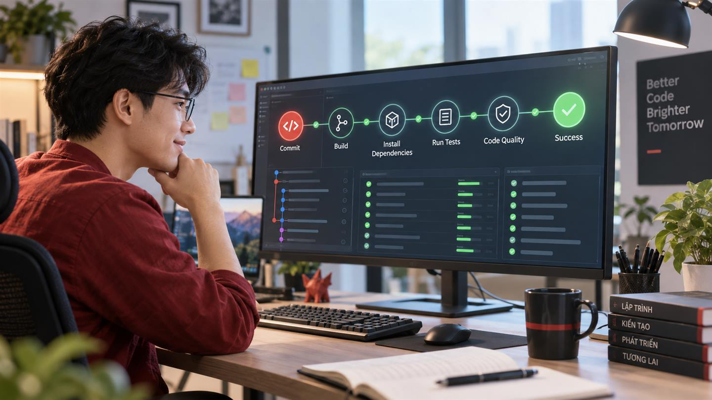

Hướng dẫn thiết lập CI cho Laravel bằng GitHub Actions
Continuous Integration giúp phát hiện lỗi trước khi mã nguồn được hợp nhất. Với GitHub Actions, mỗi lần mở hoặc cập nhật pull request có thể tự động cài dependency, chuẩn bị môi trường Laravel và chạy bộ kiểm thử. Nhóm phát triển nhận phản hồi nhất quán mà không phụ thuộc vào máy của từng người.
CI trong bài này sẽ làm gì?
- Kích hoạt khi có push hoặc pull request.
- Lấy mã nguồn lên một runner Ubuntu mới.
- Cài đúng phiên bản PHP và các extension cần thiết.
- Cache gói Composer để rút ngắn thời gian chạy.
- Tạo tệp môi trường, application key và cơ sở dữ liệu SQLite.
- Chạy
php artisan test.
Điều kiện chuẩn bị
- Dự án Laravel đã được đẩy lên GitHub.
composer.lockđược commit để CI cài đúng phiên bản dependency.- Bộ kiểm thử chạy được trên máy local bằng
php artisan test. - Cấu hình testing không phụ thuộc vào mật khẩu production.
Bước 1: Tạo workflow
Trong thư mục gốc của dự án, tạo tệp .github/workflows/laravel-tests.yml. GitHub chỉ nhận diện workflow YAML đặt trong thư mục .github/workflows.
Bước 2: Thêm cấu hình cơ bản
name: Laravel Tests
on:
push:
branches: [main]
pull_request:
branches: [main]
jobs:
tests:
runs-on: ubuntu-latest
timeout-minutes: 10
steps:
- name: Checkout source
uses: actions/checkout@v4
- name: Setup PHP
uses: shivammathur/setup-php@v2
with:
php-version: '8.3'
extensions: mbstring, dom, fileinfo, sqlite3
coverage: none
- name: Cache Composer packages
uses: actions/cache@v4
with:
path: vendor
key: composer-${{ runner.os }}-${{ hashFiles('**/composer.lock') }}
restore-keys: composer-${{ runner.os }}-
- name: Install dependencies
run: composer install --no-interaction --prefer-dist --no-progress
- name: Prepare application
run: |
cp .env.example .env
php artisan key:generate
touch database/database.sqlite
- name: Run tests
env:
DB_CONNECTION: sqlite
DB_DATABASE: database/database.sqlite
run: php artisan testHãy đổi phiên bản PHP và danh sách extension cho khớp với dự án. Các action bên thứ ba cần được đánh giá trước khi sử dụng; với môi trường yêu cầu bảo mật cao, nên ghim action bằng commit SHA đã kiểm chứng thay vì chỉ dùng tag phiên bản.
Bước 3: Điều chỉnh cơ sở dữ liệu
SQLite phù hợp với nhiều bộ test vì nhanh và không cần dịch vụ riêng. Tuy nhiên, nếu production dùng MySQL hoặc PostgreSQL và mã nguồn phụ thuộc vào hành vi đặc thù của hệ quản trị đó, hãy cấu hình service container tương ứng để kết quả CI gần môi trường thật hơn.
Bước 4: Kiểm tra workflow
- Commit tệp YAML và đẩy lên một nhánh mới.
- Mở pull request vào nhánh
main. - Mở tab Actions hoặc phần Checks của pull request.
- Chọn bước thất bại để đọc log nếu workflow báo lỗi.
Các lỗi thường gặp
| Hiện tượng | Điểm cần kiểm tra |
|---|---|
| Thiếu extension PHP | So sánh với yêu cầu trong composer.json và môi trường production |
| Không tìm thấy APP_KEY | Đảm bảo đã sao chép .env và chạy key:generate |
| Lỗi kết nối database | Kiểm tra biến DB_CONNECTION, đường dẫn SQLite hoặc service database |
| Test qua local nhưng lỗi trên CI | Tìm phụ thuộc vào timezone, hệ điều hành, cache, tệp local hoặc thứ tự chạy test |
| Workflow không chạy | Kiểm tra vị trí tệp, cú pháp YAML và tên nhánh trong trigger |
Bước 5: Bảo vệ nhánh chính
Khi workflow ổn định, cấu hình ruleset hoặc branch protection để yêu cầu kiểm tra Laravel Tests thành công trước khi merge. CI khi đó trở thành cổng chất lượng thực sự, thay vì một báo cáo chỉ để tham khảo.
Nâng cấp pipeline theo nhu cầu
- Thêm PHPStan hoặc Larastan để phân tích tĩnh.
- Thêm Laravel Pint để kiểm tra định dạng mã.
- Dùng test matrix để chạy trên nhiều phiên bản PHP.
- Tách unit test, feature test và kiểm tra chất lượng thành các job phù hợp.
- Chỉ triển khai sau khi toàn bộ kiểm tra bắt buộc thành công.
Bắt đầu bằng pipeline nhỏ, nhanh và đáng tin cậy. Một workflow phức tạp nhưng thường xuyên lỗi ngẫu nhiên sẽ khiến đội ngũ mất niềm tin và bỏ qua tín hiệu quan trọng.
Checklist hoàn thành
- Workflow chạy trên pull request.
- Phiên bản PHP khớp dự án.
- Dependency được cài từ composer.lock.
- Môi trường test không dùng bí mật production.
- Test thất bại làm job thất bại.
- Nhánh chính yêu cầu CI thành công trước khi merge.